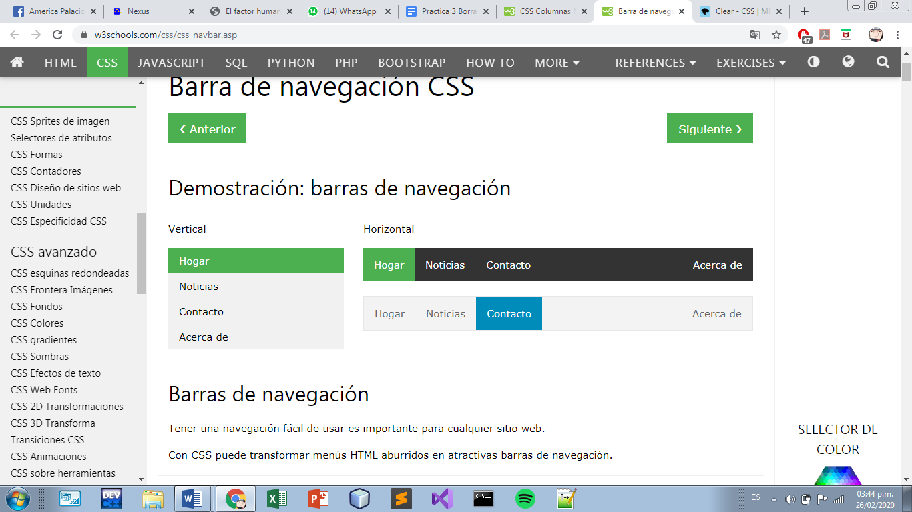

suele hacerse rodeando a otros elementos de la página, de forma que dichos elementos quedan anidados dentro del contenedor.
Puedes tener en la misma página todos los elementos < div > que consideres necesarios y con frecuencia se utilizan para crear el armazón visual. Un elemento
suele llevar un atributo ID (con lo que adquiere un “nombre” explícito dentro de la página) o bien pertenecer a una clase CSS, utilizándose ambos como medio para aplicar al contenedor uno o más estilos CSS. El empleo de elementos < div > facilita a otras personas la identificación de las diversas secciones en que se subdivide la página y también nos ayuda a controlar y aplicar estilos en cada una de ellas.
FLOAT
La propiedad float en CSS hace posible que un texto pueda escribirse alrededor de una imagen. Este estilo ha sido tomado del diseño de imprenta, donde a este efecto se le llama “justificación” del texto. CSS consigue el mismo efecto haciendo que los elementos que siguen a un elemento “flotante” puedan rodearlo, cambiando su posición relativa con respecto a él. Este comportamiento también nos sirve para crear columnas en una página.
El valor float se puede también declarar como “left”. En el ejemplo anterior, la imagen pasaría al lado izquierdo del div contenedor, y el texto se empezaría llenando el lado derecho restante.
Los únicos valores posibles para float son “left”, “right” y “none”. No se puede centrar un objeto utilizando esta propiedad.
Si queremos tener múltiples elementos flotantes dentro del mismo contenedor, el resultado es que se alinean entre sí. Este comportamiento se suele utilizar en ciertas funciones habituales de las páginas web, como por ejemplo los menús horizontales o las galerías de imágenes.Es fundamental conocer cómo interactúan múltiples elementos flotantes unos con otros a fin de utilizarlos correctamente.
Columnas
Definición y uso
La parte de ancho de columna definirá el ancho mínimo para cada columna, mientras que la parte de conteo de columnas definirá el número máximo de columnas. Al usar esta propiedad, el diseño de varias columnas se dividirá automáticamente en una sola columna en anchos de navegador estrechos, sin la necesidad de consultas de medios u otras reglas.
Clear
Definición y uso
La clearpropiedad especifica en qué lados de un elemento los elementos flotantes no pueden flotar.
Cuando es aplicado a bloques no flotantes, mueve el
border edge
del elemento hacia abajo hasta que esté debajo del
margin edge
de todos los floats relevantes. Este movimiento (cuando acontece) causa que
margin collapsingno ocurra.
Cuando se aplica a elementos flotantes, mueve el
margin edge
el elemento debajo del
margin edge
de todos los floats relevantes. Esto afecta la posición de floats posteriores, ya que estos no pueden ser posicionados más arriba que los primeros.
Los floats que son relevantes para ser limpiados (cleared) son los primeros floats dentro del mismo
contexto de formato de bloque..
Menu de navegación

Barras de navegación
Tener una navegación fácil de usar es importante para cualquier sitio web.
Con CSS puede transformar menús HTML aburridos en atractivas barras de navegación.
Barra de navegación = Lista de enlaces
Una barra de navegación necesita HTML estándar como base.
En nuestros ejemplos construiremos la barra de navegación a partir de una lista HTML estándar.
Una barra de navegación es básicamente una lista de enlaces, por lo que usar los elementos < ul > y < li > tiene mucho sentido:
Estilos de texto
Hasta aquí hemos añadido los estilos dentro de una hoja de estilos interna en vez de hacerlo sobre una externa. Cuando estamos diseñando la estructura de las páginas, el empleo de hojas de estilo internas es una cuestión de comodidad: resulta más sencillo para crear y modificar reglas si las tenemos dentro de la página y podemos llegar a ellas desplazando la ventana que si las tenemos en un archivo externo. De momento vamos a asociar una hoja de estilos externa que añade reglas de base para elementos como títulos, listas y párrafos.
Márgenes internos y externos
El primero consiste en añadir margen interno (padding) al elemento div contenedor. En este caso la ventaja es que todos los elementos dentro de este div se ven afectados al mismo tiempo, es una solución rápida y eficiente. Su desventaja es que aumenta la anchura total del propio contenedor. Para compensar esta expansión, tenemos que dejar algo de espacio adicional a los lados. Este comportamiento puede generar cierta confusión y provocar que las páginas se restituyan incorrectamente si no tenemos cuidado.
El segundo método consiste en añadir márgenes externos a los elementos que están dentro del propio div. Su desventaja es que necesitamos más código y hay que prestar atención a los detalles, tenemos que ir viendo cómo se posicionan los elementos individualmente. Su ventaja es que el posicionamiento de la columna es más predecible, puesto que solo tenemos que tener en cuenta una anchura total.
Finalmente, conviene destacar que lo habitual es aplicar una combinación de ambos métodos en cualquier estructura de presentación. Por tanto, debes conocer bien el comportamiento y los efectos de cada uno de ellos.
Conclusiones
Brandon Eli Rojas De León (1822102):
Es importante tener en cuenta todas las herramintas que actualmente tenemos para mejorar el estilo de una pagina web
por medio de la libreria css para un mejor dinamismo de este.
Debemos de tener en cuenta que las esctructuras de estilos y poner la informacion son muy importantes
para que los usuarios tengan una informacion buena y confiable.
“Juda Abimael Carrillo Castañon (1825476)” REPRESENTANTE:
Con esa lección pudimos ver varios ejemplos de cómo las propiedades de CSS nos ayudan a cambiar la presentación de una página, cómo cada navegador implementa su propio estilo para tags básicas de html (y cómo podemos sobrepasar eso) y algunas actividades para aprender a estilizar las partes de nuestra página.
“Ivan Israel Puente Baena (1818135)” :
En esta leccion pudimos aprender diversas propiedades de CSS que nos facilita la edicion de las presentaciones de paginas web y como se mejora la estetica basica que los navegadores proporcionan y que estas herramientas o tags nos brindan la facilidades de cambiar la preentacion a un nivel mejor.
“Eduardo Reyes Gutiérrez (1992291)” :
aprendimos diferentes tipos de propiedades sobre css que nos pueden ayudar a mejorar nuestras páginas web, de hacer una pagina aburrida con css podemos hacerla más llamativa y así evitar que se aburra el espectador al momento de consultarla además de dejar más en claro los objetivos de la pagina al hacerlos mas llamativos.
“Andony Alejandro Reyna Vaquera (1806785)”:
CSS es la tecnología creada con el fin de separar la estructura de la presentación, y mejorar la usabilidad y experiencia de usuario de un sitio web, permitiendo el desarrollo web responsive y disminuyendo el procesamiento y el tiempo de carga, factores que pueden marcar la diferencia entre triunfar o morir en el intento.
Bibliografía
https://docs.microsoft.com/es-es/previous-versions/msdn10/hh749022(v=msdn.10)
https://www.w3schools.com/